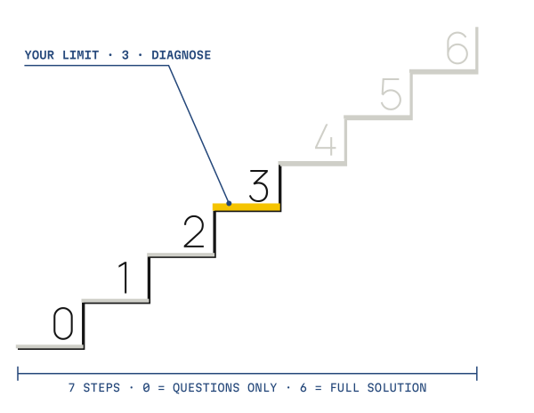

7
Help levels
Questions only, point, explain, diagnose, direct, fragment and solve. Raise the limit when you're stuck, lower it when you want to work alone.
Practice coach · ступень, a step
Stupen is a practice coach for any subject at any level. Tell it what you want to learn and where you are starting. It plans the steps, builds exercises it has already solved, and coaches you only as much as you allow, on a help limit from 0 to 6.

The help limit
Seven levels, from questions only to a full solution. The coach stays under your limit and labels every reply with the level it used. Choose a step to see the same stuck moment answered at that level.
Mock-up · a Python lesson
Your split leaves punctuation on the words, so "hi," and "hi!" are different keys. Lower-casing them is fine; the punctuation is what is wrong.
Replies on this page were written for the demo. In Stupen, the coach answers your own code and your latest check output.
What it does
7
Questions only, point, explain, diagnose, direct, fragment and solve. Raise the limit when you're stuck, lower it when you want to work alone.
2
A lesson's hidden solution must pass its tests and the starter files must fail them. If that still fails after one retry, the lesson says its tests are unverified.
12
Python, TypeScript, JavaScript, Go, Rust, Java, C, C++, SQL and Bash in a sandbox, plus written answers the coach grades and your own check command.
13
React, Node, a plain web page, Python, Go, Rust, Java, Ruby, PHP, .NET, Elixir, Deno and Bun, with any packages, or any Docker image you choose.
4
Paste a link, upload a file, paste text, or let it search the web. Build what you add into your plan, turn it into a lesson, or attach it to a question.
13
Buttons above the chat, from "give me a hint" to "quiz me". Any prompt can send itself, or be suggested, when you open a lesson, fail, get stuck, pass or hand in.
Status
Stupen runs on SUBCULT's homelab for invited learners, behind a sign-in. There is no public sign-up or download. The source is on GitHub under the AGPL; you can run your own copy.
The coach runs on Claude and ChatGPT. It can be wrong, and the help limit is an instruction it follows, not a guarantee. Every reply says which level it used.
Support
Stupen is built by SUBCULT, an independent collective that makes tools and media. If you want more work like this, you can support the collective.